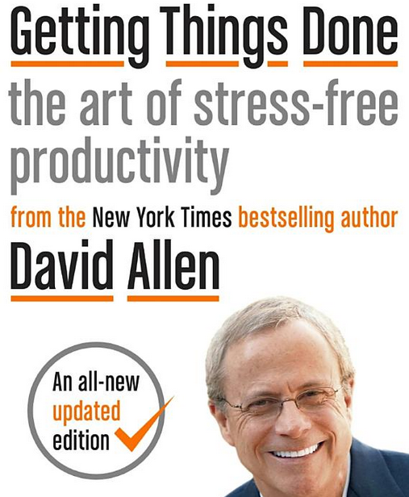
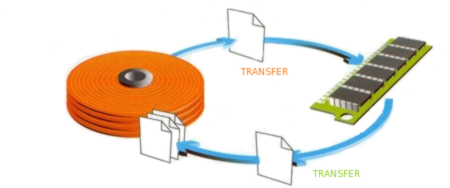
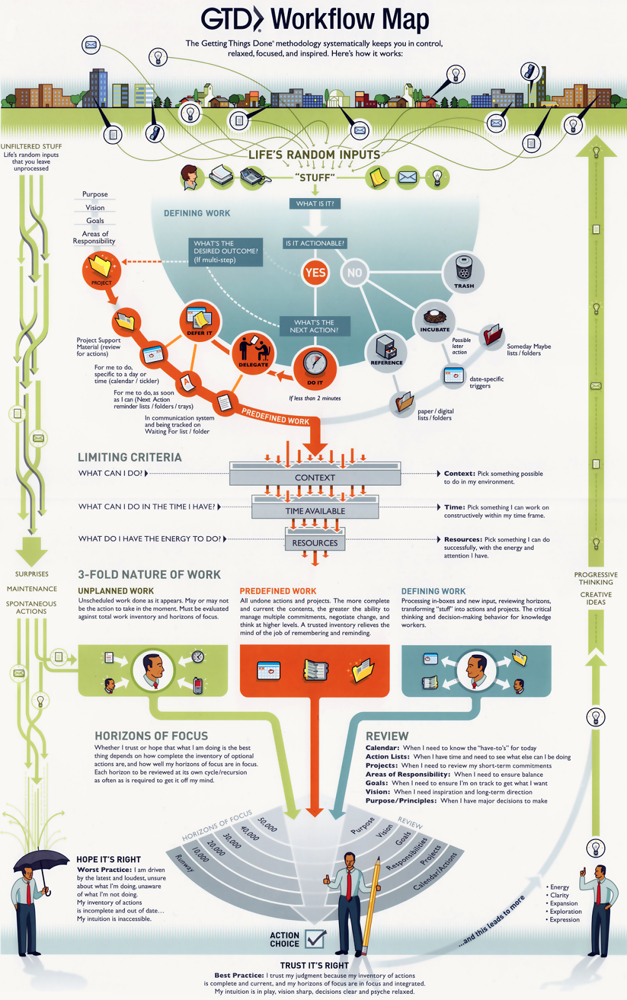
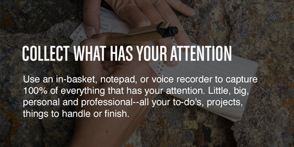
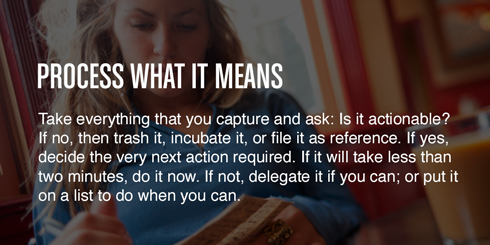
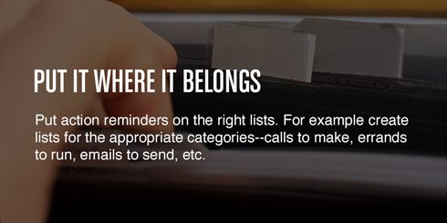
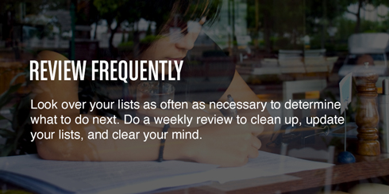
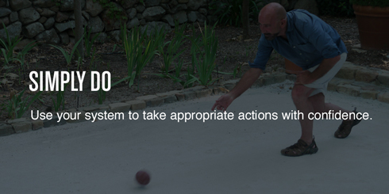
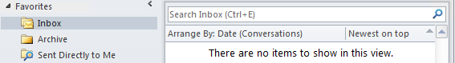
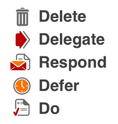

class: center, middle, inverse # Getting Things Done [and inbox zero] --- class: center, middle, inverse ## What is GTD and why would it help me? --- layout: false .left-column[ ## What is it? ] .right-column[ <figure>  <font size="12"> <figcaption> </figcaption> </font> </figure> ] --- layout: false .left-column[ ## What is it? ] .right-column[ - Time Management Method - Framework to move tasks, reminders, and projects out of the mind - Trusted System - Use your brain for doing - not remembering - RAM/SWAP Example <br> <br> <figure>  <font size="4"> <figcaption> thrashing </figcaption> </font> </figure> ] --- layout: false .left-column[ ## What is it? ## Why would you use it? ] .right-column[ It’s allows for appropriate engagement, giving full attention to whatever you're doing—whether it’s working while at home, or weekends without having to think about work: - This is not just corporate BS - Helps you focus on what's really important to you - Gives you freedom to prioritize work how you want - Balance time [10 Benefits of GTD](<https://facilethings.com/blog/en/benefits>) ] --- layout: false .left-column[ ## What is it? ## Why would you use it? ## Why do I try to use it? ] .right-column[ - First job relied on my mind + inbox - More and more meetings and phone calls - forgetting + spinning wheels - Improved my focus and helped me reach goals - Without it, still stuck in survival mode ] --- layout: false .left-column[ ## What is it? ## Why would you use it? ## Why do I try to use it? ## Disclaimer ] .right-column[ - Everyone has their own system, you may already love yours - Still trying to improve my own system - OneNote vs paper vs todoist etc - tool agnostic ] --- class: center, middle, inverse ## What is the secret sauce? -- [five simple steps] --- # [Workflow Map](/gtd-workflow-map.png)  --- layout: false .left-column[ ## Collect ] .right-column[ <figure>  <font size="6"> <figcaption> </figcaption> </font> </figure> ] -- Where do we get stuff to capture? -- JIRA, UTS, Emails, Project Meetings, Huddles, Skype, Calls --- layout: false .left-column[ ## Collect ## Process ] .right-column[ <figure>  <font size="6"> <figcaption> </figcaption> </font> </figure> ] --- layout: false .left-column[ ## Collect ## Process ## Organize ] .right-column[ <figure>  <font size="6"> <figcaption> </figcaption> </font> </figure> ] --- layout: false .left-column[ ## Collect ## Process ## Organize ## Review ] .right-column[ <figure>  <font size="6"> <figcaption> </figcaption> </font> </figure> ] --- layout: false .left-column[ ## Collect ## Process ## Organize ## Review ## Do ] .right-column[ <figure>  <font size="6"> <figcaption> </figcaption> </font> </figure> ] --- class: center, middle, inverse ## outlook-- --- # Inbox Zero <br> <br> <br> <br> -- <figure>  <font size="6"> <figcaption> Let's spend less time in Outlook </figcaption> </font> </figure> -- <br> <br> "Just remember that every email you read, re-read, and re-re-re-re-re-read as it sits in that big dumb pile is actually incurring mental debt on your behalf. The interest you pay on email you're reluctant to deal with is compounded every day and, in all likelihood, its whats led you to feeling far behind." - Merlin Mann --- # Inbox Zero <figure>  <font size="6"> <figcaption> </figcaption> </font> </figure> --- # Inbox Zero -- - Does not mean you monitor your email all day, some recommendations are 2x per day -- - Use categories, not folders -- - Only have an inbox and an archive -- - Search folders -- - Use quick actions -- - Defer => Trusted System -- # DEMO --- # Resources [Solid Youtube Explanation](https://www.youtube.com/watch?v=gCswMsONkwY) [Massive GTD Resource](https://zenhabits.net/massive-gtd-resource-list/) [Lifehacker Primer](https://lifehacker.com/productivity-101-a-primer-to-the-getting-things-done-1551880955) [OneNote Tips](https://www.bettercloud.com/monitor/the-academy/10-tips-tricks-that-will-make-you-a-onenote-ninja/) --- # Examples to share?